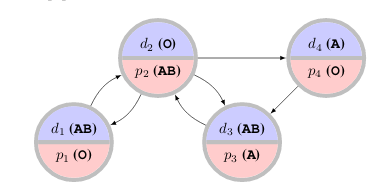

My name is Michael Jeremiah Curry. I am a third-year Ph.D. student at the
University of Maryland, College Park in the Computer Science department, advised by John Dickerson and Tom Goldstein and affiliated with the Center for Machine Learning.
Previously I attended Columbia University, where I received an MS in computer
science, and Amherst College, where I received a BA in computer science.
My office is room 4120 in the Brendan Iribe Center.
You can reach me at:
curry at cs dot umd dot edu
A list of my publications is here.
Research interests
Below is a summary of some recent projects and research interests.
Machine learning for matching and allocation

I have worked on applying machine learning to problems in matching and allocation. A particular application is to the kidney exchange problem, in which transplant patients and their willing but biologically-incompatible donors exchange kidneys, sometimes in cycles or long chains.
Although the problem is NP-hard there are reductions to integer programming allowing efficient solutions in practice. Kidney exchange networks have been very successful around the world, but there are still open research problems whose solutions could dramatically improve quality-of-life for the many patients still waiting for transplants.
Differentiable optimization for matching problems
In many settings for matching problems, including kidney exchange, the compatibility of elements might not be known exactly but can be predicted from features of the elements. (For example, transplant donors and patients might be found biologically incompatible for reasons not known beforehand.) In this situation, one reasonable approach is to simply learn to predict compatibility in a supervised manner, and then feed the predictions into the IP solver that will output a final matching.
However, the actual goal in this problem is not accurate prediction, it is producing high-value matches, and there is reason to believe that
optimizing a model to directly achieve the true objective, rather than low prediction error, can improve performance.
Doing so requires leveraging recent work allowing differentiation through integer program solutions.
Reinforcement learning for dynamic set packing
I have also worked on a project applying reinforcement learning to dynamic set packing (with applications to kidney exchange), which was presented in preliminary form at RLDM this summer under the title "Reinforcement learning for dynamic set packing" (Curry, McElfresh, You, Moy, Huang, Goldstein, Dickerson).
In brief, there is reason to believe that in the dynamic setting, when elements arrive and depart over time, simply greedily matching all available elements immediately may not be optimal. We formulate the environment as an MDP, where at each time step the agent chooses whether or not to perform a greedy matching using a standard LP solver, and use standard reinforcement learning techniques to learn a good policy. The approach works in toy settings but performs poorly in a more realistic simulation.
We hope that applying differentiable optimization in this setting might let us avoid the need for unpleasantly noisy REINFORCE estimators of the policy gradient. Preliminary work is ongoing to see if these can improve performance.
Game theory
Inverse correlated equilibria
I am in the early stages of a project relating involving the maximum entropy inverse correlated equilibrium approach to imitation learning in (one-shot) games, with applications in transportation and routing under emergency conditions.
Given a small amount of observed play (perhaps orders of magnitude fewer observations than the number of parameters) under some unknown strategy, with unknown utilities for the players, that forms a correlated equilibrium, it is possible to recover a good approximation of the true strategy. In a correlated equilibrium, players must have low internal regret, so one can simply solve a maximum entropy optimization problem, subject to a set of constraints ensuring that no player's regret can be any larger than in the observed play.
SI3-CMD DARPA grant
I have been funded by a DARPA grant ("Serial Interactions in Imperfect Information Games for Complex Military Decision-Making (SI3-CMD)", joint with Fotini Christia, Costis Daskalakis, Erik Demaine, John Dickerson, MohammadTaghi Hajiaghayi) related to game theory. In brief, the goal is to formulate a multiplayer version of the classic KKT social network influence-maximization problem. Investigation is ongoing into the computation of correlated equilibria by no-regret learning. My contributions have been to the applied side of the grant, dealing with the applications of the techniques to real-world graphs.
Other research interests
Wasserstein trust regions for reinforcement learning
A class of trust-region methods for reinforcement learning, including PPO and TRPO, have been very successful in practice. The trust region approaches take advantage of the fact that as long as the two policies are "close enough", it is possible to ensure that the bias of a low-variance gradient estimator will remain small. "Closeness" is defined in terms of the total variation distance of the policies (considered as conditional distributions over actions). With an accurate estimate and the right step size, policies are guaranteed to improve monotonically at each step (at least in expectation).
Total variation distance is in fact a special case of optimal transport distances, where the ground cost is just the least informative possible metric (cost zero for identical elements, one otherwise). In cases where we do have more information about structure and similarity of actions, using a more informative metric might be better. For instance, in many continuous control problems, actions are vectors in a Euclidean space; then using the standard notion of distance as a cost corresponds to the famous Wasserstein distance. Under some reasonable assumptions about the transition functions of the MDP (essentially that transition probabilities vary smoothly as actions change), it is possible to show that equivalent bounds hold and monotonic convergence is still guaranteed.
This idea has occurred independently to several other research groups, with slightly different goals and assumptions. Unfortunately, some of them have come up with working approaches before me. I am still trying to think of a novel angle to work on.
Previous work at NIH
I have also worked at the National Institutes of Health, in the Section on Quantitative Imaging and Tissue Sciences, on projects related to making predictions from the fusion of multimodal structural and functional imaging data.
Rideshare dispatch
I made some contributions to "Mix and Match: Markov Chains and Mixing Times in Matching for Rideshare". The main thrust of the paper is an analysis of convergence rates to a stationary distribution of cars of some simple dispatch policies for a model of rideshare. The idea is that in the steady state, the dispatcher wants to ensure that cars are well-distributed to pick up prospective passengers. I was part of the work to add some RL-based baselines which somewhat outperform the proposed policies although with much worse convergence and hugely higher computational cost.